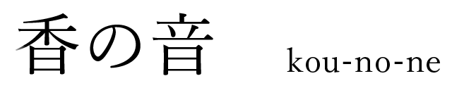
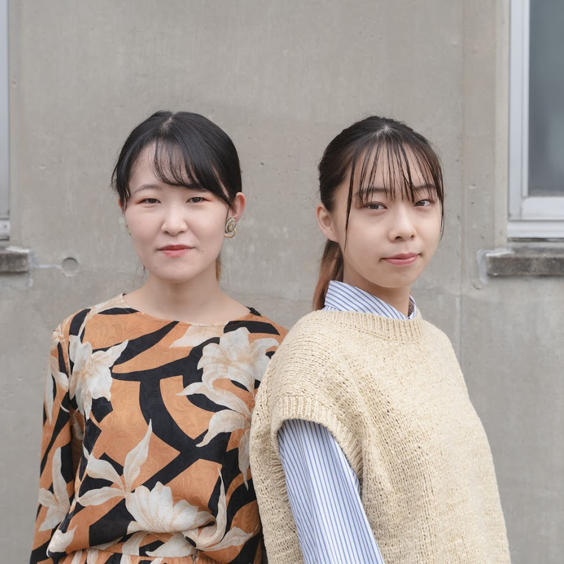

九州大学芸術工学部工業設計学科 4年 寺﨑薫 / 3年 富嶋菜々香
火がうつり、灰になり、やがて燃え落ち音がなる。
ひらひらと舞いながらうつりゆく時を静かに知らせる。
お香の灰が落ちると音がなり、水中を灰がはらはらと舞い落ちるお香たてです。
水を張りお香のその先を作ることによって、自然に落ちる灰が音を立て水中へと消えていきます。
一定の間隔で音を立てるお香立てが、日常の静かなタイマーとして時のうつろいを私たちに教えてくれます。
私たちは、落ち葉を観察しながら時のうつろいについて考えました。葉っぱが舞い、落ちる音が時間のうつろいを静かに教えてくれます。家の中の生活ではなにかがひらりと落ちてきたりその音に静かに耳をすませたりすることは多くありません。慌ただしい日々の中で、時間を知らせてくれるのは携帯のアラーム音や時計の電子音です。
そこで私たちは、落ち葉のように家の中で静かに時を知らせてくれる自然の音で時のうつろいを表現できないだろうかと考えました。
お香が落ちる前の緊張感、それが一気に解ける灰の音。その先の余韻。



寺﨑薫 / 富嶋菜々香
てらざきかおる / とみしまななか
九州大学芸術工学部工業設計学科４学年・3学年